Herahakatha replaces the Excel logsheets in the powerhouse. Operators type each reading into a phone or PC at the moment they read the meter. The app checks every number as it is typed, works out all the totals itself, and keeps everything in one place, so reports for a day, a month or a year are always one tap away.
| Log | When | What you enter |
|---|---|---|
| Feeder Reading 1 | Every hour, 00:00 to 23:00 | kW on the HV Network incomer and 11 feeders |
| Feeder Reading 2 | Every hour, 00:00 to 23:00 | kW on 14 feeders |
| Solar | Every 30 minutes, 06:00 to 18:00 | Total plant kW from the inverter display |
| Daily meters | Once a day (morning) | Counters for water, solar inverters, generators and the diesel flow meter |
| Genset log | Every hour while a generator runs | Voltage, frequency, currents, load, oil pressure, temperature and more |
Your administrator gives you one of four roles. The role decides which menu items you see. Viewers see the readings screens under Readings, to look but not change.
| Operator | Supervisor | Viewer | Admin | |
|---|---|---|---|---|
| Enter readings for today and yesterday | ✓ | ✓ | – | ✓ |
| Look at earlier days (read-only) | 90 days | a year | 90 days | a year |
| Change older readings (with a reason) | – | ✓ | – | ✓ |
| Accept a counter that went backwards (meter replaced) | – | ✓ | – | ✓ |
| Approve a day | – | ✓ | – | ✓ |
| Reports | today's daily reports | all | all | all |
| Meters, users, settings, audit log, import | – | – | – | ✓ |
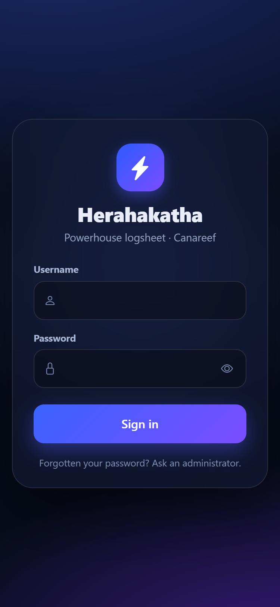
Forgotten your password? Ask an administrator. They can set a new one for you.
Open More (phone) or use the Sign out button at the bottom of the left menu (PC). Always sign out on a shared phone or PC.
The same web address works everywhere. The screen rearranges itself to suit your device.
| On a phone | On a PC |
|---|---|
| Four buttons along the bottom: Today · Enter · Reports · More. Readings are entered one hour at a time, one big box per meter. | A menu down the left side. Readings are entered in a table showing the whole day, like the old Excel sheet. |
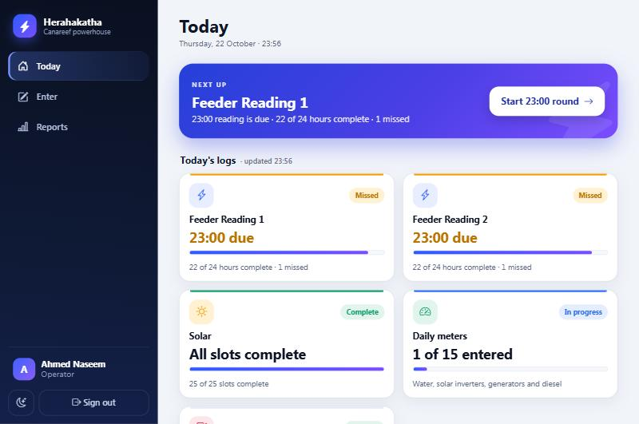
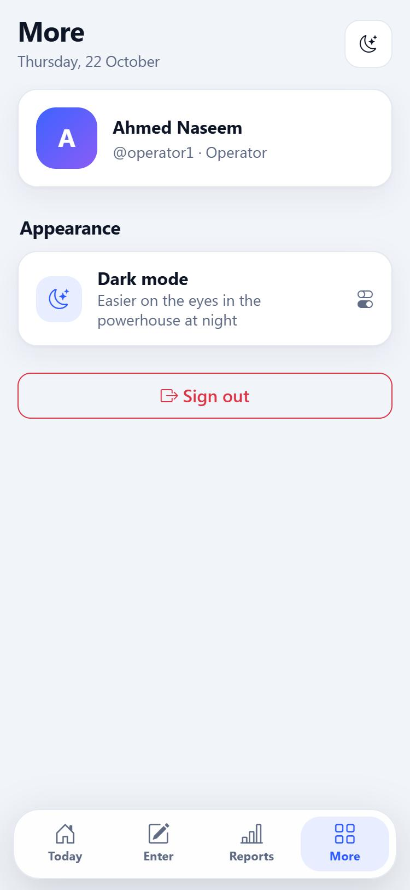
You can add Herahakatha to your phone like an app, so it opens full screen with one tap.
Tap the moon button at the top right of any screen to switch between light and dark. Dark mode is easier on the eyes at night. The app remembers your choice on that device.
Today opens as soon as you sign in. It shows what has been done, what is due now and what has been missed, so you never have to hunt for the right sheet.
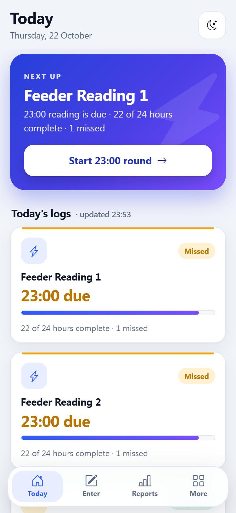
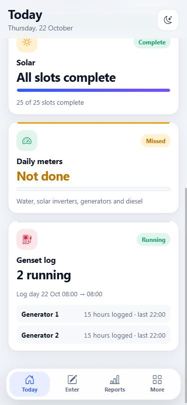
The blue panel at the top tells you the most important thing to do right now, for example Start 23:00 round. Tap it to open that reading directly. When everything is up to date it turns green and says All caught up.
| Card shows | Meaning |
|---|---|
| Due or a time like 23:00 due | That reading is due now and has not been entered yet. |
| Missed (amber) | An earlier hour has no readings. Tap the card to go and fill it in. |
| Complete (green) | Every meter has a reading for every slot so far. |
| Progress bar and “22 of 24 hours complete” | An hour counts as complete when every meter in that log has a value. |
| Genset log: Running | Lists each generator that has been logged on the current log day. |
Tap any card to open that log. The page refreshes itself every minute.
The Enter tab shows the same logs as large buttons, each opening on the reading that is due.
This is the main job of every shift. On the hour, walk to the panels, read each feeder's kW at that moment and type it in. Do this for Feeder Reading 1 and Feeder Reading 2.
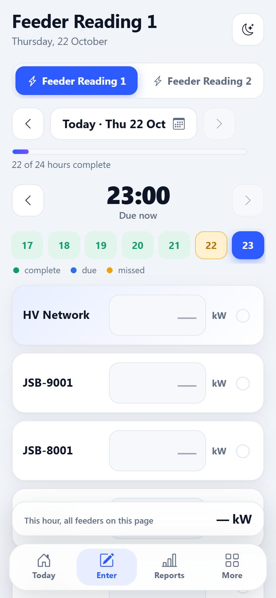
281.4.| Icon / tag | Meaning |
|---|---|
| ✔ green tick | Saved. |
| ⚠ amber triangle | Saved not yet: the value looks unusual and needs your decision (see below). |
| ✖ red cross | Not saved: the value was refused. Read the red message and fix it. |
| ⌛ blue hourglass | Typed while offline. It will send by itself when the connection returns. |
| late | Saved more than 20 minutes after its hour. The reading is kept; the tag only shows when rounds ran late. |
| Name tag | Who entered the value. |
The app checks every number as you type it. There are two kinds of problem.
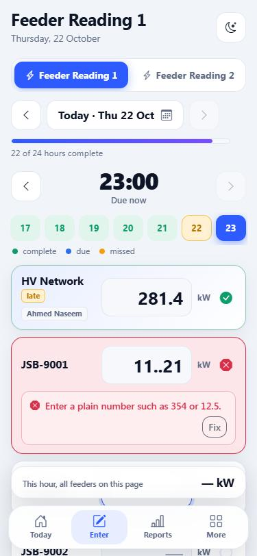
11..21 has two decimal points. It cannot be saved, so tap Fix and retype.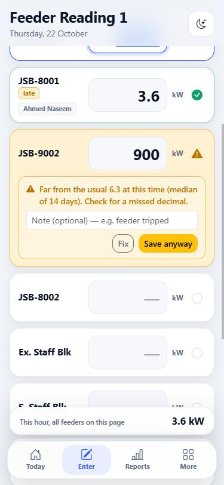
| Kind | What happens | What you do |
|---|---|---|
| Blocked (red) | The value is not saved. Typical reasons: letters or extra dots, a blank, a negative number, a time that has not happened yet. | Tap Fix and type it again. |
| Warning (amber) | The value is saved only if you confirm. The app thinks it is far from what that feeder usually reads at that hour, or outside its normal range. | Re-read the panel. If you made a slip, tap Fix. If the number is really correct (a feeder tripped, a machine stopped), optionally type a note and tap Save anyway. |
354 instead of 35.4 is the commonest slip. If a warning appears, look at the decimal point first.0 is a normal reading (for example the Heat Ex. Pump at night). Leave a box empty only if the meter was not read.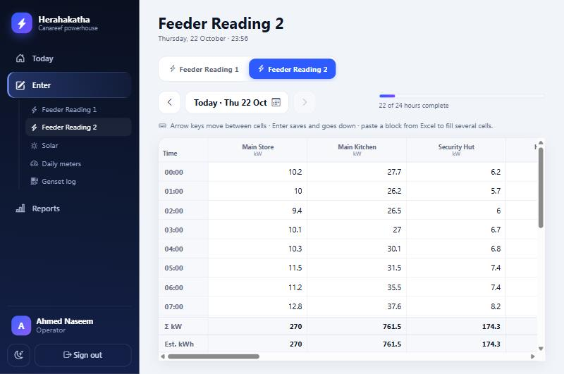
From 06:00 to 18:00, every half hour, read the total plant kW from the inverter display and type it in. It works exactly like the feeder screen, with one box for each solar plant.
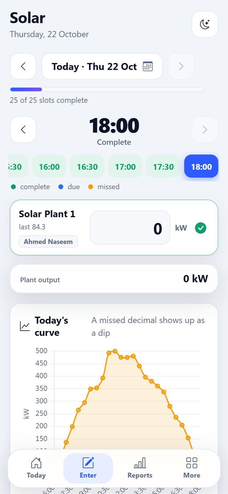
If a new solar plant is added by the administrator, it appears here automatically as another box.
Once a day, in the morning, read the running counters (they only ever go up): the water meter, every solar inverter, the four generators and the powerhouse diesel flow meter.
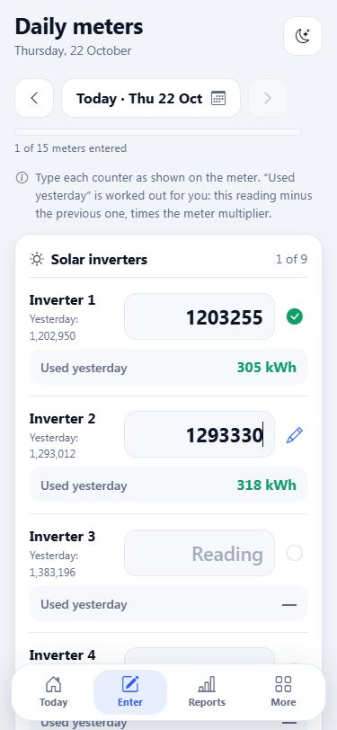
It is this morning's reading minus yesterday's reading, multiplied by the meter's multiplier. The generator counters, for example, are read ÷10 to get kWh, so a tag such as × 0.1 is shown next to them. You never need to do the sum.
While a generator is running, log it every hour. The log day runs from 08:00 to 07:00 the next morning, so a night shift stays on one log.
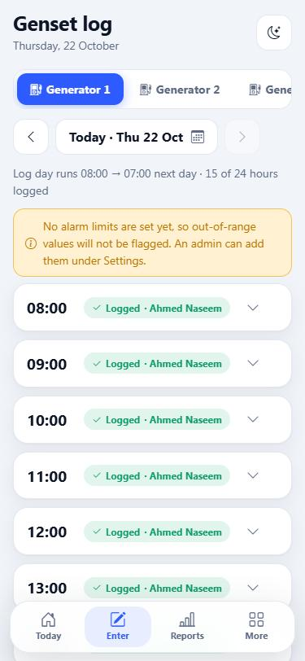
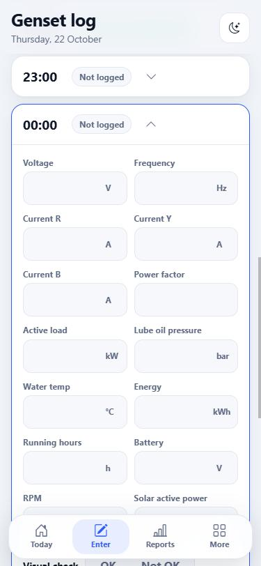
| Button / sign | What it does |
|---|---|
| Copy last hour | Fills this hour with last hour's values so you only change what moved. |
| Logged · name | This hour is saved; the name shows who did it. |
| Not logged / Later | Nothing entered yet / the hour has not started. |
| Out of limit | Oil pressure, water temperature, battery, frequency or voltage is outside the limits set by the engineer, or the visual check was Not OK. You are asked to confirm with Save anyway, and the hour is flagged for supervisors. |
The powerhouse depends on the resort's internet, but your round must not stop. If the connection goes, keep entering readings as normal.
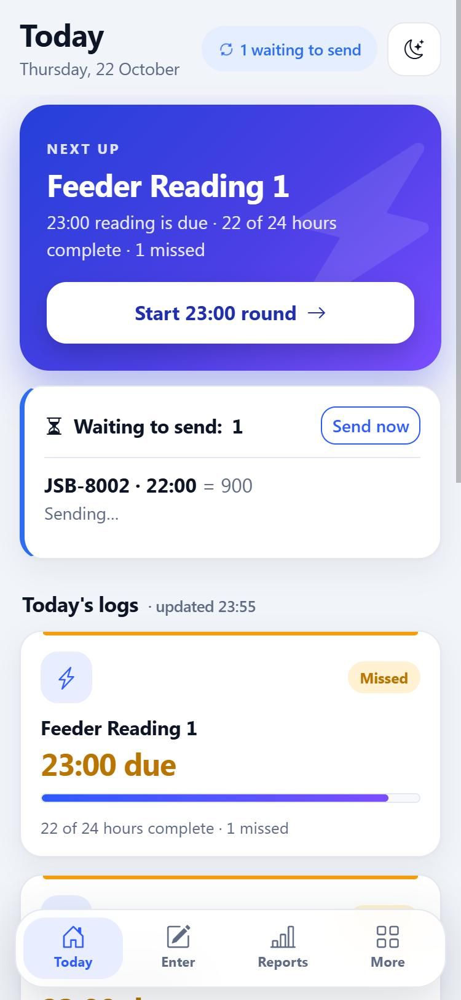
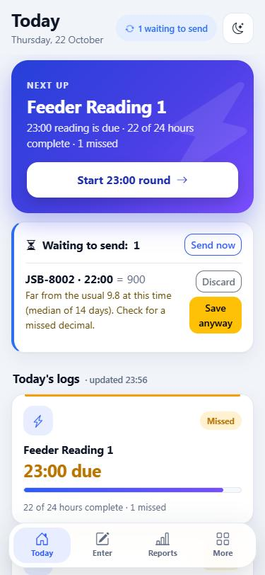
The new value replaces the old one, and the app keeps a record of the change (old value, new value, who and when) in the audit log.
| Who | Which readings can they change |
|---|---|
| Operator | Today and yesterday. Older days open view only, so you can look but not change; ask a supervisor to correct anything. |
| Viewer | None: viewers can look at readings and reports but not change them. |
| Supervisor / Admin | Any day. For a reading older than yesterday the app asks why you are changing it, and the reason is saved. |
Every report is built from the saved readings, so nothing is copied between sheets. Tap Reports.
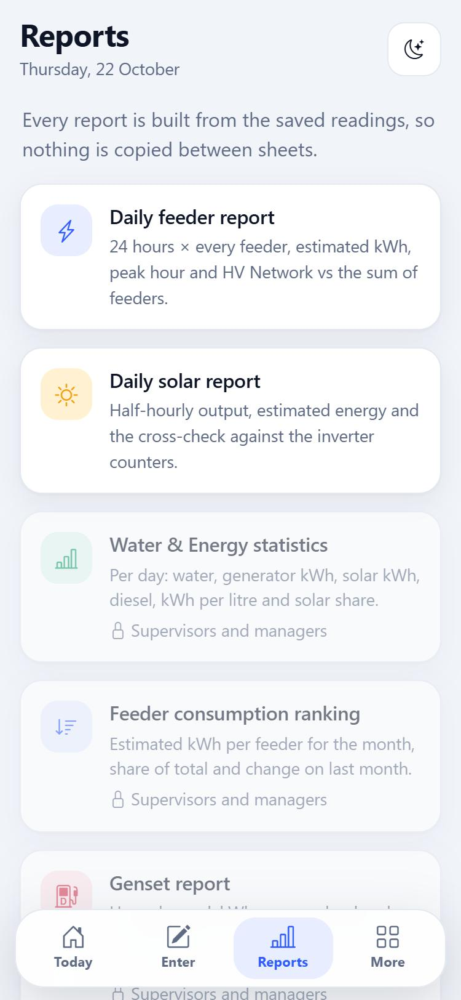
| Report | Shows |
|---|---|
| Daily feeder | 24 hours × every feeder, estimated kWh, peak hour, and the HV Network against the sum of the feeders. |
| Daily solar | Half-hourly output, estimated energy, and a cross-check against the inverter counters. |
| Water & Energy statistics | Per day: water, generator kWh, solar kWh, diesel, kWh per litre, solar share. |
| Feeder ranking | Estimated kWh per feeder for a month, share of total, change on last month. |
| Genset | Hours logged, kWh, average load and power factor per generator. |
| Completeness | Slots filled against expected, late readings, warnings saved anyway and who entered. |
Operators see today's daily reports. Supervisors, viewers and administrators see everything.
Use the date or month box at the top of a report. It updates as soon as you pick.
The buttons at the top right of each report: CSV (opens in Excel), Excel, PDF and Print.
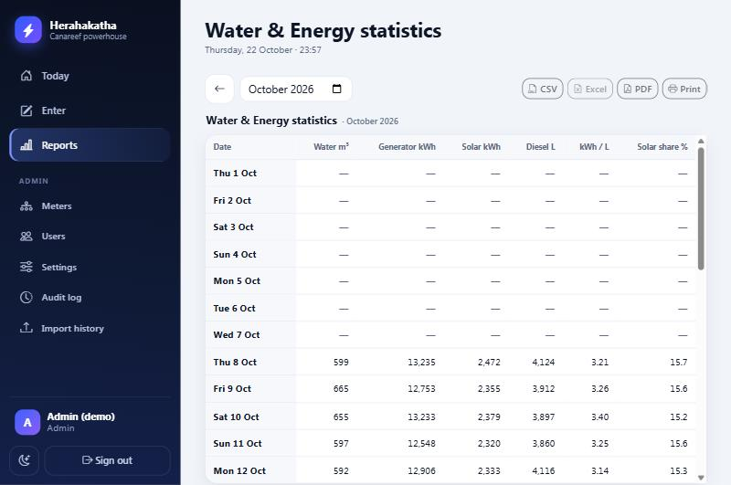
Above the ranking, choose Table or Graph. The graph is a bar chart of estimated kWh per feeder, highest first. Hover (or tap) a bar to see its share of the total and its change on last month. Amber bars are up more than 10%; green bars are down more than 10%. The app remembers which view you used last.
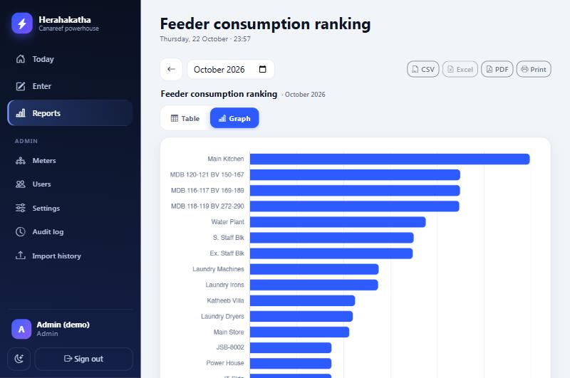
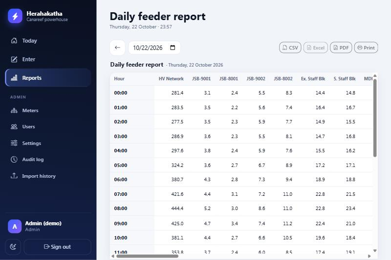
At the bottom of the Today screen you will find Yesterday's review. Check that each log looks complete, then tap Approve next to it. The card then shows Approved by your name.
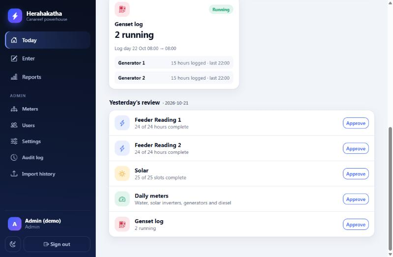
| Situation | What to do |
|---|---|
| An operator needs an older reading changed | Open that day and hour, type the correct number and, when asked, give the reason. |
| A meter was replaced or reset, so the counter is lower | Type the new reading on the Daily meters screen. When the red “Lower than the previous reading” message appears, type a reason (for example Meter replaced) and tap Override: meter replaced / reset. |
| You need figures for a month | Use the monthly reports and download the Excel or PDF. |
Administrators have an extra Admin section in the left menu (on a phone, under More).
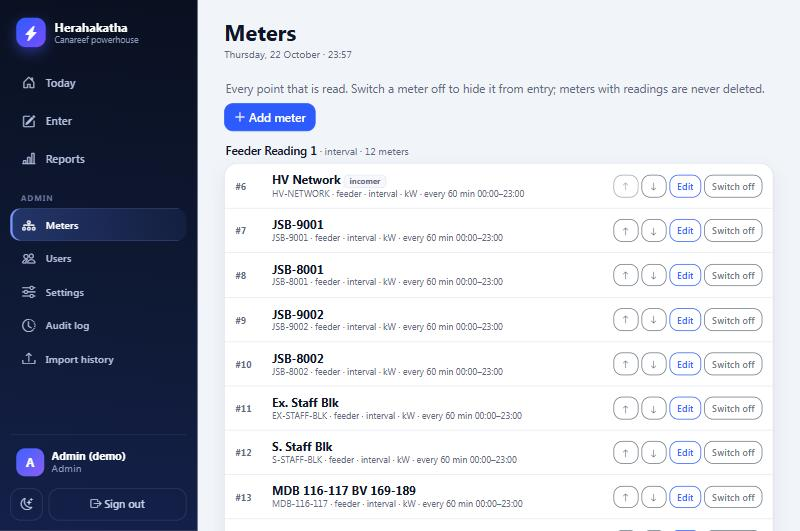
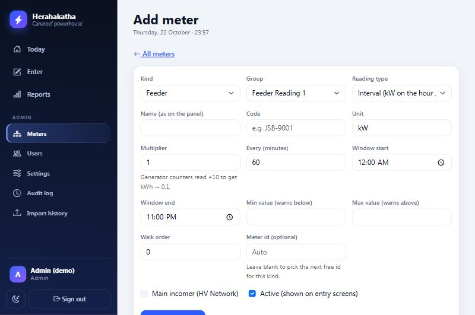
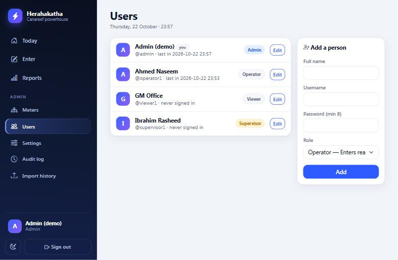
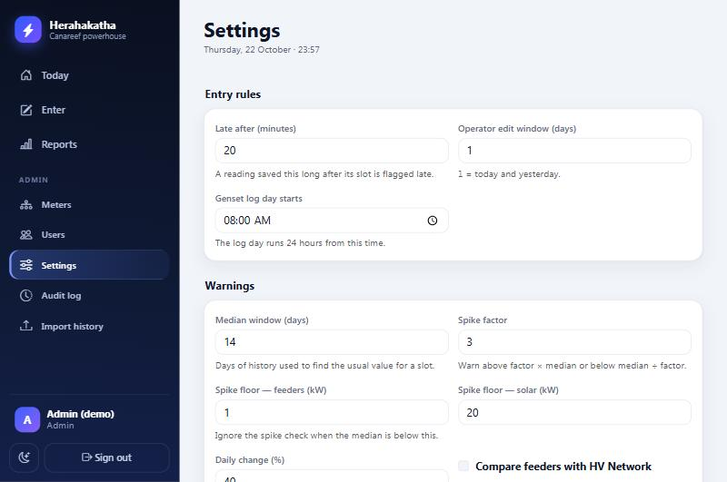
| Setting | What it does |
|---|---|
| Late after (minutes) | A reading saved later than this after its hour gets the late tag. Default 20. |
| Operator edit window (days) | How far back operators can change readings. 1 means today and yesterday. |
| Look-back for operators and viewers (days) | How far back they can look at the feeder, solar, daily-meter and genset screens. Default 90. Days outside the edit window open view only. |
| Median window, Spike factor and floors | How unusual a feeder or solar value must be to raise a warning. Defaults suit the powerhouse; change them only after a few weeks of clean data. |
| Daily change (%) | How far a day's counter use may differ from the 7-day average before a warning. |
| Compare feeders with HV Network | Turn on once you have confirmed all feeders sit under the HV Network. |
| Generator limits | Minimum oil pressure, maximum water temperature, minimum battery, frequency and voltage range. Leave blank to skip a check. Values come from the chief engineer. |
| Alert email | Where the nightly “what was missed yesterday” summary is sent. |
Lists every reading that was changed after it was first saved: when, which meter and slot, old and new value, who changed it and why.
Brings the old Excel logsheets into the app, one month at a time, so reports and comparisons go back in time.
11..21) and values that look like a missed decimal point. Each has a suggested fix you accept, correct or dismiss.| Message | Kind | What to do |
|---|---|---|
| Enter a plain number such as 354 or 12.5. | Blocked | The box has letters, a second decimal point, a slash or is blank. Retype it. |
| A reading can't be negative. | Blocked | Remove the minus sign. |
| That time hasn't happened yet. | Blocked | You are entering a later hour. Go back to the due hour. |
| Operators can only enter today and yesterday. Ask a supervisor. | Blocked | That day is view only for you. Ask a supervisor to enter or change that reading. |
| That time isn't a reading slot for this meter. | Blocked | Readings are on the hour (or every 30 min for solar). Use the hour strip. |
| Lower than the previous reading … Check the meter. | Blocked | Re-read the counter. If the meter was replaced or reset, ask a supervisor to override. |
| Higher than the next day's reading … | Blocked | A later day already has a smaller counter. Check both days' readings. |
| Say why you are changing an older reading. | Blocked | (Supervisors) type the reason and tap Save change. |
| Far from the usual … Check for a missed decimal. | Warning | Re-read the panel. Fix a slip; Save anyway if the value is genuine. |
| Outside the usual range (min to max). | Warning | As above. The range is set by the administrator for that meter. |
| Yesterday's use would be … away from the 7-day average. | Warning | Daily meters. Check the digits, then Fix or Save anyway. |
| Oil pressure / water temperature … is outside the limit. | Out of limit | Genset log. Deal with the engine, then Save anyway to record it truthfully. |
| Enter at least one value. | Blocked | Genset log: you tapped Save hour with every field empty. |
| Your session ended. Sign in again. | Info | Sign in. Anything you typed offline is still waiting and will send. |
The value saves when you press Enter / Next or tap another box. Check the icon at the right of the box: a green tick means saved, a red cross means it was refused (read the message), a pencil means you have not left the box yet.
Use the date button at the top of the screen and tap the left arrow. You can go back about 3 months. Days older than yesterday open view only for operators; a supervisor can correct them.
Wait a few seconds, then tap the badge at the top to send now. If it stays offline, check the phone's Wi-Fi.
There is only ever one value per meter per hour. Typing again simply replaces it.
An hour only counts as complete when every meter in that log has a value. Open the hour and look for an empty box (a grey circle on the right).
It may be switched off. Ask an administrator to check Admin → Meters.
First open Reports → Completeness for that day to see whether readings are missing. A missing or mistyped reading changes totals. Fix the reading and the report updates by itself.
Ask an administrator to set a new one (Admin → Users → Edit).
Your shift supervisor first. For anything the supervisor can't fix, contact the system administrator.
Enter → Solar: type the plant kW from the inverter display.
Enter → Daily meters: type each counter exactly as shown. “Used yesterday” is worked out for you.
Enter → Genset log: pick the generator, open the hour, fill in the fields, Save hour.
| Green | Saved / complete |
| Blue | Due now / waiting to send |
| Amber | Check this value / missed |
| Red | Refused, fix it |
herahakatha.canareef.cloud